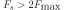
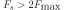
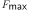
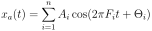
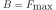
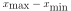

Next: Quantisation Up: Signal conversion Previous: Signal conversion Contents
 is sampled at intervals
is sampled at intervals  to get
the sampled signal
to get
the sampled signal  .
.
 (3)
(3)
 (4)
(4)
What is the frequency range of our digital signal? What is
the maximum frequency in digital terms? Fig 1 shows that the
max frequency is  because we need two samples to
represent a “wave”. The frequency range
because we need two samples to
represent a “wave”. The frequency range  is called the normalised frequency range. What is the relation
between normalised frequency and sampling rate?
is called the normalised frequency range. What is the relation
between normalised frequency and sampling rate?
Let's have a look at the analog signal  with the frequency
with the frequency  :
:
 (5)
(5)
 (6)
(6)
 (7)
(7)
Now, we can define the normalised frequency as:
 (8)
which represents one period of
a sine wave within two samples1
(8)
which represents one period of
a sine wave within two samples1
 is
and that:
is
and that:
 (9)
(9)
 as an integer because
we are sampling.
as an integer because
we are sampling.
What happens above  ? Imagine
? Imagine 
 (10)
(10)
 . We see that above
. We see that above  we never
get higher frequencies. Instead they will always stay between
for the simple reason that it is not possible
to represent higher frequencies. This will be discussed later
in greater detail.
we never
get higher frequencies. Instead they will always stay between
for the simple reason that it is not possible
to represent higher frequencies. This will be discussed later
in greater detail.
The ratio  must be lower than to avoid ambiguity
or in other words the maximum frequency in a signal must be lower than
. This is the Nyquist frequency.
must be lower than to avoid ambiguity
or in other words the maximum frequency in a signal must be lower than
. This is the Nyquist frequency.
If there are higher frequencies in the signal then these frequencies
are “folded down” into the frequency range of

and creating an alias of its original frequency in the so called
“baseband” (). As long as the alias is not overlapping
with other signal components in the baseband this can be used to
downmix a signal. This leads to the general definition of the
sampling theorem which states that the bandwidth  of the input signal
must be half of the sampling rate
of the input signal
must be half of the sampling rate  :
:
|

|
What do we do if the signal contains frequencies above ? There are two ways to tackle this problem: The classical way is to use a lowpass filter (see Fig. 2A) which filters out all frequencies above the Nyquist frequency. However this might be difficult in applications with high resolution A/D converters. Alternatively one can use a much higher sampling rate to avoid aliasing. This is the idea of the sigma delta converter which operates at sampling rates hundred times higher than the Nyquist frequency.
 is max frequency in the signal which we
represent by sine waves:
is max frequency in the signal which we
represent by sine waves:
The analogue signal  can be completely reconstructed if:
with
The problem is that  runs from negative time to positive time
and as we see later is a-causal so that this cannot be implemented
for real but approximations of are possible and are analogue
lowpass filters which smooth out the step like outout of an digital
to analogue converter.
runs from negative time to positive time
and as we see later is a-causal so that this cannot be implemented
for real but approximations of are possible and are analogue
lowpass filters which smooth out the step like outout of an digital
to analogue converter.

![\includegraphics[width=0.75\textwidth]{max_sampl}](img39.svg)